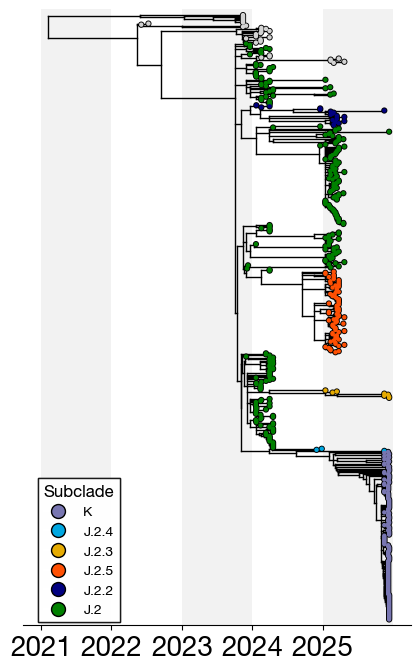

# test
download nextstrain build JSON (https://nextstrain.org/groups/PekoszLab/seasonal/vic/ha)
download nextstrain build JSON (https://nextstrain.org/groups/PekoszLab/seasonal/vic/ha)
nextstrain remote download https://nextstrain.org/groups/PekoszLab/seasonal/vic/ha
https://nextstrain.org/groups/PekoszLab-Public/seasonal-flu/h3n2/ha
nextstrain remote download https://nextstrain.org/groups/PekoszLab-Public/seasonal-flu/h3n2/ temp_data/import os
import baltic as bt
import matplotlib as mpl
import matplotlib.pyplot as plt
from matplotlib.lines import Line2D
from typing import Dict, Optional, Tuple, Any
# Set global fonts once
typeface = 'Helvetica Neue'
mpl.rcParams['font.weight'] = 200
mpl.rcParams['axes.labelweight'] = 300
mpl.rcParams['font.family'] = typeface
mpl.rcParams['font.size'] = 22
def plot_phylogenetic_tree(
tree_file: str,
color_by: str = "subclade",
tip_colors: Optional[Dict[str, str]] = None,
tip_shapes: Optional[Dict[str, Dict[str, Any]]] = None,
default_tip_color: str = "lightgrey",
figsize: Tuple[float, float] = (5, 8),
tree_line_width: float = 1,
tree_line_color: str = 'k',
point_size: float = 10,
point_outline: bool = True,
point_outline_color: str = "black",
add_labels: bool = False,
label_distance: float = 0.8,
label_fontsize: int = 10,
x_labelsize: int = 14,
background_bars: bool = True,
background_alpha: float = 0.1,
save_path: Optional[str] = None,
dpi: int = 300,
show_color_legend: bool = True,
show_shapes_legend: bool = True,
legend_position_colors: Tuple[float, float] = (0.02, 0.25),
legend_position_shapes: Tuple[float, float] = (0.02, 0.05),
legend_fontsize: int = 10,
legend_title_fontsize: int = 12,
legend_marker_size: int = 10,
color_legend_title: Optional[str] = None,
shapes_legend_title: str = "Reference Strains",
right_margin: float = 0.0,
title: Optional[str] = None,
title_fontsize: int = 16
):
"""
Generalized function to plot phylogenetic trees from Auspice JSON files.
Parameters
----------
tree_file : str
Path to the Auspice JSON file
color_by : str, default="subclade"
Node attribute to color tips by (e.g., 'clade', 'subclade', 'region', 'country')
tip_colors : dict, optional
Dictionary mapping attribute values to colors. If None, uses default_tip_color.
Example: {"C.3": "#7876B1", "C.3.1": "#00A7E1"}
tip_shapes : dict, optional
Dictionary mapping tip names to shape specifications.
Example: {"B/Austria/1359417/2021": {"marker": "X", "facecolor": "red",
"edgecolor": "black", "markersize": 12, "display_name": "Vaccine"}}
default_tip_color : str, default="lightgrey"
Color for tips not in tip_colors dictionary
figsize : tuple, default=(5, 8)
Figure size (width, height) in inches
tree_line_width : float, default=1
Width of tree branches
tree_line_color : str, default='k'
Color of tree branches
point_size : float, default=10
Size of tip points
point_outline : bool, default=True
Whether to add outline to tip points
point_outline_color : str, default="black"
Color of tip point outlines
add_labels : bool, default=False
Whether to add tip labels
label_distance : float, default=0.8
Distance from tree to labels
label_fontsize : int, default=10
Font size for tip labels
x_labelsize : int, default=14
Font size for x-axis labels
background_bars : bool, default=True
Whether to add alternating year background bars
background_alpha : float, default=0.1
Alpha transparency for background bars
save_path : str, optional
Path to save figure. If None, displays interactively
dpi : int, default=300
DPI for saved figure
show_color_legend : bool, default=True
Whether to show legend for tip colors
show_shapes_legend : bool, default=True
Whether to show legend for tip shapes
legend_position_colors : tuple, default=(0.02, 0.25)
Position of color legend (x, y) in figure coordinates
legend_position_shapes : tuple, default=(0.02, 0.05)
Position of shapes legend (x, y) in figure coordinates
legend_fontsize : int, default=10
Font size for legend entries
legend_title_fontsize : int, default=12
Font size for legend titles
legend_marker_size : int, default=10
Size of markers in legend
color_legend_title : str, optional
Title for color legend. If None, uses color_by attribute name
shapes_legend_title : str, default="Reference Strains"
Title for shapes legend
right_margin : float, default=0.0
Additional right margin for figure (useful for legends)
title : str, optional
Title for the plot
title_fontsize : int, default=16
Font size for plot title
Returns
-------
fig, ax : matplotlib figure and axis objects
"""
# Load tree
tree = bt.loadJSON(tree_file)
# Define color function for tips
def c_func(node):
if not node.is_leaf():
return default_tip_color
# Get the attribute value for this node
attr_value = node.traits.get(color_by)
# Return color if in tip_colors, otherwise default
if tip_colors and attr_value in tip_colors:
return tip_colors[attr_value]
return default_tip_color
# Prepare figure and axis
fig, ax = plt.subplots(figsize=figsize, facecolor='w')
x_attr = lambda k: k.absoluteTime
# Plot tree
tree[0].plotTree(
ax,
connection_type="baltic",
x_attr=x_attr,
colour=tree_line_color,
width=tree_line_width
)
tree[0].plotPoints(
ax,
x_attr=x_attr,
size=point_size,
outline=point_outline,
outline_colour=point_outline_color,
colour=c_func,
zorder=100
)
# X-axis year range and background bars
all_dates = [k.absoluteTime for k in tree[0].Objects]
min_year = int(min(all_dates))
max_year = int(max(all_dates)) + 1
if background_bars:
for i, year in enumerate(range(min_year, max_year)):
ax.axvspan(
year, year + 1,
facecolor='grey' if i % 2 == 0 else 'white',
alpha=background_alpha if i % 2 == 0 else 0,
edgecolor='none'
)
ax.set_xticks(range(min_year, max_year))
ax.set_xticklabels([str(y) for y in range(min_year, max_year)])
# Plot special tip shapes
if tip_shapes:
for k in tree[0].Objects:
if k.is_leaf() and k.name in tip_shapes:
shape_config = tip_shapes[k.name]
ax.scatter(
k.absoluteTime, k.y,
s=shape_config.get('markersize', 150),
marker=shape_config.get('marker', 'X'),
facecolors=shape_config.get('facecolor', 'white'),
edgecolors=shape_config.get('edgecolor', 'black'),
linewidths=shape_config.get('linewidth', 1.5),
zorder=200
)
# Optional labels
if add_labels:
max_x = max(k.absoluteTime for k in tree[0].Objects if k.is_leaf())
label_x = max_x + label_distance
for k in tree[0].Objects:
if k.is_leaf():
ax.plot(
[k.absoluteTime, label_x],
[k.y, k.y],
color='gray',
linestyle=':',
linewidth=1
)
ax.text(
label_x + 0.1, k.y, k.name,
va='center', ha='left',
size=label_fontsize,
color='black'
)
# Format axes
ax.xaxis.tick_bottom()
ax.tick_params(axis='x', labelsize=x_labelsize)
ax.set_ylim(-5, tree[0].ySpan + 5)
ax.set_yticks([])
[ax.spines[loc].set_visible(False) for loc in ax.spines if loc != 'bottom']
# Adjust x-axis limits for right margin
if right_margin > 0:
current_xlim = ax.get_xlim()
ax.set_xlim(current_xlim[0], current_xlim[1] + right_margin)
# Add title
if title:
ax.set_title(title, fontsize=title_fontsize, pad=20)
# Color legend
if show_color_legend and tip_colors:
legend_elements = [
Line2D([0], [0], marker='o', color='w', label=label,
markerfacecolor=color, markeredgecolor='black',
markersize=legend_marker_size)
for label, color in tip_colors.items()
]
if color_legend_title is None:
color_legend_title = color_by.capitalize()
color_legend = ax.legend(
handles=legend_elements,
loc='upper left',
bbox_to_anchor=legend_position_colors,
title=color_legend_title,
fontsize=legend_fontsize,
title_fontsize=legend_title_fontsize,
frameon=True,
fancybox=False,
edgecolor='black'
)
ax.add_artist(color_legend)
# Shapes legend
if show_shapes_legend and tip_shapes:
shape_elements = []
for tip_name, shape_config in tip_shapes.items():
display_name = shape_config.get('display_name', tip_name)
shape_elements.append(
Line2D([0], [0],
marker=shape_config.get('marker', 'X'),
color='w',
label=display_name,
markerfacecolor=shape_config.get('facecolor', 'white'),
markeredgecolor=shape_config.get('edgecolor', 'black'),
markersize=legend_marker_size,
linewidth=0)
)
shapes_legend = ax.legend(
handles=shape_elements,
loc='upper left',
bbox_to_anchor=legend_position_shapes,
title=shapes_legend_title,
fontsize=legend_fontsize,
title_fontsize=legend_title_fontsize,
frameon=True,
fancybox=False,
edgecolor='black'
)
# Save or show
if save_path:
os.makedirs(os.path.dirname(save_path), exist_ok=True)
plt.savefig(save_path, bbox_inches='tight', dpi=dpi)
plt.close(fig)
else:
plt.show()
return fig, axtip_colors = {
"K": "#7876B1",
"J.2.4": "#00A7E1",
"J.2.3": "#e6ab02",
"J.2.5": "#FF5003",
"J.2.2": "#010080",
"J.2": "green"
}
plot_phylogenetic_tree(
tree_file="temp_data/seasonal-flu_h3n2_ha.json",
color_by="subclade",
tip_colors=tip_colors,
color_legend_title="Subclade",
x_labelsize=20
)
Tree height: 4.841665
Tree length: 101.794579
Numbers of objects in tree: 1000 (429 nodes and 571 leaves)
